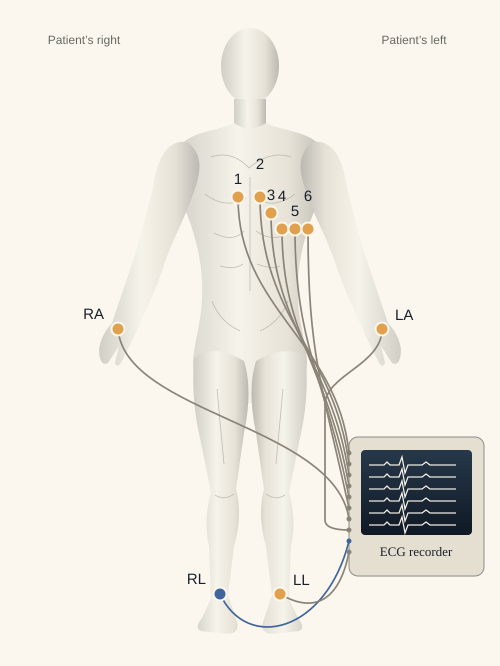
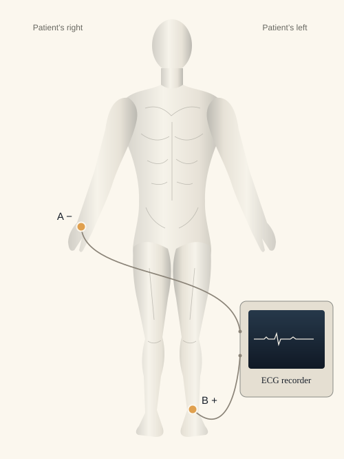

Pertzel Lab · Season 1 · An independent research practice within J & Co
How well does an ECG model travel?
An ECG turns the heart’s electrical activity into a trace. I’m testing how reliably an open AI model reads those traces—and what changes when the recordings come from somewhere else.
One heart. Different electrical views.
An electrocardiogram—an ECG—records tiny changes in voltage at the skin as the heart’s electrical activity changes. Clinicians use the shape and timing of those signals to assess the heart’s rhythm and other features of its electrical function.
A lead is one electrical view. A standard 12-lead ECG combines signals from ten skin contacts to give twelve views. A single-lead recording gives one view; it does not necessarily come from a watch.
Two measurement contacts can give one lead, because the signal is the difference between them.
How are the electrodes connected? Open the visual guide
An electrode is a contact on the skin. A lead is an electrical view made by comparing voltages. The wires carry those signals to the ECG recorder. The AI model is separate software that reads the resulting recording.
12-lead ECG

Nine measurement contacts: six on the chest (V1–V6) and three on the limbs. Their signals are combined to create twelve views.
RL, right-leg contact: supports interference reduction. It is not an extra ECG view.
Single-lead ECG

B − A = one ECG traceBoth contacts measure. The recorder subtracts the voltage at A from the voltage at B, moment by moment. That difference is one lead.
A separate third contact can help reduce interference. It is omitted here to make the measurement pair clear; neither gold contact is that third contact.
Schematic educational view; positions are approximate, and monitor traces are illustrative. This is not a device setup or clinical placement guide. Single-lead devices can use other contact positions. ECG placement source · Two- and three-electrode recording
The AI, the dataset, and my part.
ECGFounder is the AI software. It takes ECG recordings and produces scores for possible findings. Its authors trained it on more than ten million ECGs and evaluated it on several other datasets. I’m using their released model; I didn’t train it.
PTB-XL is a collection of recordings and reference labels. It is one of the datasets in the original paper. In Week 2, I ran the authors’ released 12-lead model on 21,799 PTB-XL recordings and checked how closely my scores matched their reported results.
The single-lead version is separately trained. It belongs to the same ECGFounder project, but it is a different model from the 12-lead version used in Week 2.
- 01 · INPUTA recording
Twelve electrical views from a PTB-XL ECG.
- 02 · MODELECGFounder
The authors’ already-trained 12-lead model.
- 03 · OUTPUTFinding scores
How strongly the model ranks each possible finding.
- 04 · CHECKCompare with labels
Score its outputs against the dataset’s reference labels.
The model receives the ECG. The reference labels are used afterwards to evaluate its predictions.
There may be more in the signal.
There is more in an ECG than a heartbeat count. Researchers are investigating whether subtle patterns can help identify conditions beyond heart rhythm, including kidney disease. In the ECGFounder study, the kidney-disease experiments used fine-tuning: additional training for that particular task.
That is promising, but it is a different claim from saying this lab has detected kidney disease, saved clinicians time or improved care. My Week 2 experiment tested none of those things. Expert interpretation also draws on years of medical training and clinical context.
The possibility is worth investigating: a useful model might help clinicians notice patterns they would otherwise miss. First, we need to understand what it measures, where its results hold up, and where they don’t.
Source: the published ECGFounder study, including its fine-tuned disease prediction experiments.
Most individual scores reproduced closely.
The useful result from Week 2 is specific: I could reproduce most of one published evaluation. I also found an unexplained difference in the reported average, inconsistent preparation instructions, and label-count questions that need clarifying.
29 of 30 individual scores within 0.001.
The headline average is still unexplained. The numerical tolerance I wrote down before the run was not met.
Read the result, with the figures →This is an independent check of work the authors had already done. It gives me a better starting point for the next test. It does not establish a benefit for patients or clinicians.
Where the work stands.
- Completed · Week 1
Make the pipeline work.
Ten PTB-XL records passed through the model. This checked the connection from data to output; it was not a performance estimate.
- Completed · Week 2
Question still openCheck the published evaluation.
29 of 30 individual scores reproduced within 0.001. The original headline tolerance was not met. The reported average and some label counts remain unexplained.
- Current preparation
Prepare the surgical comparison.
VitalDB contains recordings taken during surgery. VitalDB Arrhythmia adds expert-reviewed labels to selected ECG segments. The loader, label mapping and exclusions are being prepared; no new performance result is reported here.
- Planned · Next checks
Make the comparisons stronger.
Keep each patient’s recordings together when estimating uncertainty. Add a PTB-XL lead II baseline using the same single-lead model planned for VitalDB. Allocate time at Sunday planning, 1 November.
- Later · Not started
From datasets toward devices.
Chest-strap and three-pad hardware experiments belong to a later season. Producing a model output from a new device would not, by itself, establish that it is useful or accurate.
Follow the evidence.
25 October · Week 2 · Correction draft 28 OctoberMost individual results reproduced. The reported average is still unexplained.
The numbers, the preparation choices, and the questions that are still open.
18 October · Original announcementHow this season began.
The original announcement is kept as part of the record. This page carries the current interpretation and status.
See the original Week 1 figures and connection check
From the work.
Real data · Licensed and attributed


Figure C as text
| Record | Cardiologists' codes | Model's two strongest guesses |
|---|---|---|
| 1 | NORM, LVOLT, SR | sinus rhythm 1.00 · normal sinus rhythm 1.00 |
| 2 | NORM, SBRAD | sinus bradycardia 1.00 · marked sinus bradycardia 0.99 |
| 3 | NORM, SR | sinus rhythm 1.00 · normal sinus rhythm 1.00 |
| 4 | NORM, SR | normal sinus rhythm 1.00 · sinus rhythm 1.00 |
| 5 | NORM, SR | sinus rhythm 1.00 · normal sinus rhythm 1.00 |
| 6 | NORM, SR | sinus rhythm 1.00 · normal sinus rhythm 1.00 |
| 7 | NORM, SR | sinus rhythm 1.00 · normal sinus rhythm 1.00 |
| 8 | IMI, ABQRS, SR | normal sinus rhythm 1.00 · sinus rhythm 1.00 |
| 9 | NORM, SR | sinus rhythm 1.00 · normal sinus rhythm 1.00 |
| 10 | NORM, SR | sinus rhythm 1.00 · normal sinus rhythm 1.00 |